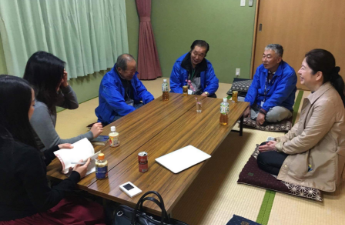

前回の市議会議員選挙にて、投票率が平均よりも約10ポイント高かった今泉・今泉台町内会に取材に行って来ました!
地域の特色は？
町内会の取り組みは？
どうして政治意識が高いのか？
以下のレポートをぜひご覧下さい！
このWebサイトを正常にご覧いただくには、お使いのブラウザのJavaScriptを有効にする必要があります。
by 選挙をジブンゴト化しよう委員会
前回の市議会議員選挙にて、投票率が平均よりも約10ポイント高かった今泉・今泉台町内会に取材に行って来ました!
地域の特色は？
町内会の取り組みは？
どうして政治意識が高いのか？
以下のレポートをぜひご覧下さい！
鎌倉市の前回の市議選では、市全体の投票率が過去最低となりました。そのような中で、今泉、今泉台地区は全体より10ポイント近くも高い投票率を記録しています。私たちは、どうしてこのような結果になったのか、投票率向上のヒントが隠れているのではないかと考え、町内会長さんにお話を伺うことにしました。
学生（Rumi & Kyoka）
ずばり、投票率の高さの理由は何でしょうか？
今泉
うーん、私たちもわかりません。実は、投票率が高いということも知りませんでした。
今泉台
私も、知りませんでした。
学生（Rumi & Kyoka）
選挙当日の様子を教えてもらえますか？
今泉
家族で投票に来ている人が多いですね。特に市議会議員選挙、県会議員選挙などの地域と直結する選挙は家族の中で誘い合ってみんなで行くことが多いです。
学生（Rumi & Kyoka）
ということは、家族内で地域の政治への関心が高まっているのでしょうか？
今泉
そうかもしれません。
今泉台
家族で参加する活動やイベントに、家族で参加する若い世帯が増えてきたように思います。例えば、毎月のクリーンデーには子どもと遊びながら参加する若い世代の家族も多いです。
学生（Rumi & Kyoka）
若い世代の地域活動への参加状況を教えてください。
今泉
実は今、若い家族が増えています。この地域一帯は、景観保護区になっているので、マンションが建てられず、地域に入ってくる方は、戸建てに住みます。正直便利とは言えない、こういう環境を選ぶということは、家族でのんびりするライフスタイルを望んでいるからなのかもしれません。そしてこういう方々は情報にも敏感で、イベントなどの企画はかなり共有出来ています。市民運動会や盆踊り大会など、毎回とても盛り上がります。毎月の定例会には、最近は若い人も参加していますよ。100席以上用意するけれど基本すべて埋まりますし、足りなくなるくらいです。
今泉台
私たち地域も同じように、集会は満席になります。その中に若い世帯も増えてきました。
学生（Rumi & Kyoka）
地域の政治参加意識が高い理由は？
今泉台
環境は与えられるものではなく、自分で作るものという意識を持つことが大切だと思っています。「活力がある街であり続けるために、自分たちが動かなければいけない」という問題意識と、「身の周りの環境をより良くしたいという」想いは、多くの住民が共有していることだと思います。
今泉
「投票にも行かないで、文句ばかり言ってんじゃねぇ」昔から親にそう言われてきました。家族、親族の関係が強い地域でもあるので、そんな考えが残っているのかもしれません。せっかく持っている権利なんだから、使わなきゃもったいないしね。
学生（Rumi & Kyoka）
その他に、選挙に行く理由はありますか？本音でお願いします。笑
今泉
立ち会い人がほとんど知り合いっていうのも大きいですね。選挙に行かなかったらすぐバレちゃいますから（笑）親戚関係も多く、横の繋がりが密な分、「行かなきゃ」という思いになります。町内で応援する議員もいます。強制ではないけど、この地域の課題を解決してくれる議員がいることをこっちも知っているし、助かっているから、やっぱり応援したくなります。議員との密な繋がりも投票行動に向かう大きな理由です。
【取材後記】
今泉、今泉台での活発な地域活動が、家族内での政治参加意識の向上のきっかけとなり、投票行動を促進しているということが分かりました。住民の皆さんの持つ、まちや身の周りの環境への問題意識も政治参加に繋がっているのですね。「誰かが作るものではなく、自分たちが作るもの」という意識がまさに「ジブンゴト化」と言えるのではないでしょうか。
また、議員との繋がりが強いことが投票率向上につながるなら、若者と議員（候補）の繋がりを増やせば、若者の投票率もあがるのではないか？という仮説を得ることができました。
そのような現状から私たちが学べることは何なのか、どうすれば若者も「ジブンゴト化」できるのか、引続き追求していきます。
【参照】前回の市議選の結果について
※投票所別の投票率はP15〜18
https://www.city.kamakura.kanagawa.jp/senkan/documents/250421shigi.pdf

森脇 留美Rumi Moriwaki
日本女子大学3年
若者の政治参加を促したい、投票率を上げたい！という思いを形に出来て本当に嬉しいです。
たくさんの人に知ってもらい、結果に繋がるよう精一杯頑張ります！
吉田 京加Kyoka Yoshida
慶應義塾大学2年生
インターンシップで出会った仲間と、長い間、考え悩みながら計画してきた企画の実現が、ようやく目に見えてきました。ここまで私たちを支えてきてくださった方々に大変感謝しております。1人でも多くの人に私たちの想いが届くことを願っています！


鎌倉の企業や住民が中心となって「このまちを愛する人を全力支援」をスローガンに活動しているNPO団体です。
月一回、街を良くするプレゼンに対してブレインストーミングという手法でアイデアを出す定例会を行い、そこから生まれた様々なプロジェクトが展開されています。